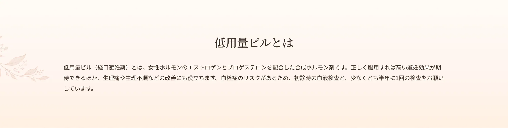
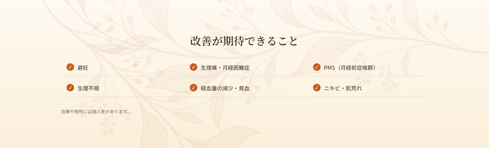
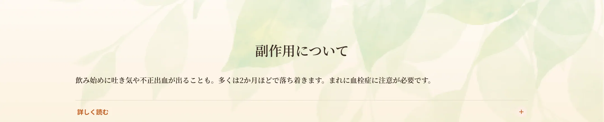
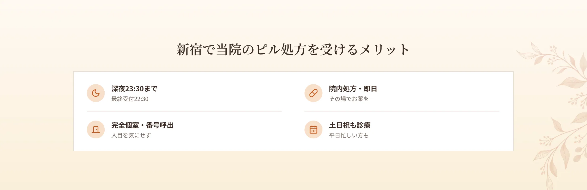
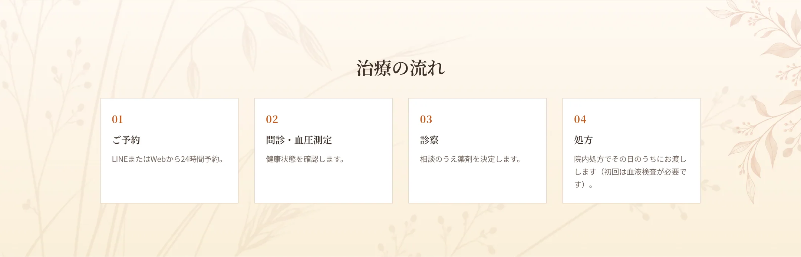
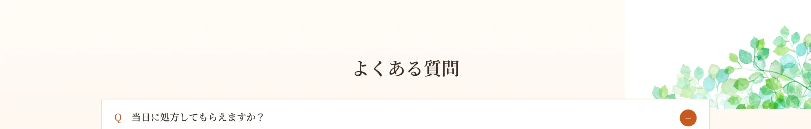

低用量ピルの主な副作用としては、服用開始直後に妊娠初期のような症状（吐き気・頭痛・腹痛・めまいなど軽度のもの）が現れることがあります。また、ホルモン環境の変化により一時的に不正出血が起こることもあります。多くは2か月ほどで体が慣れ、症状は和らいでいきます。症状が強い場合や体が慣れない場合は医師にご相談ください。また、ごく稀に血栓症を起こすことがあります。健康な方であればリスクは低いものの、肥満や喫煙ではリスクが高まるため、内服には医師への相談が必要です。血栓症に備え、約半年に1回の血液検査で状態を確認します。



A.問診・血圧測定のうえ最短30〜40分で当日処方が可能です。
A.生理痛・PMS・生理不順などの改善目的でも処方します。
A.血栓症リスクの確認のため、初診時と半年に1回の検査をお願いしています。
A.多くは2か月ほどで和らぎます。強い場合はご相談ください。
A.深夜23:30まで（最終受付22:30）対応しています。